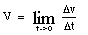
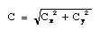
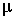
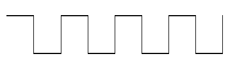

Introduction
This tutorial utilizes Huetinck, L. (1994). Physics. Lincoln, NE: Cliffs Notes Inc. The Page numbers and Figure numbers refer to that text. I believe that the purchase of this book would be extremely helpful to interpreters to get a surface understanding of physics. Enough so that the interpreter will understand the relationship between concepts. This tutorial is meant to be used in conjunction with reading this book. Not all of the book is covered, but a good portion of it is. This has been used by me previously to teach a 30-hour course in interpreting for math and science and I hope it will prove useful to you the reader. Generally the terms presented are in the text on the Pages mentioned. Ocasionally I add some related concepts. Click here for an explanation of the glossing system.
- Page 3
- kinematics
- K-I-N-E-M-A-T-I-C-S.
- function of time
- F-BUSINESS DEPEND TIME.
displacement
- (1) If it simply means movement, as in "the particle experiences a displacement", use MOVE. (2) If it means the distance between the final position and the initial position, as it does in this context, use HOW FAR FROM (<) VERY-FIRST POSITION TO, (>) LAST POSITION. Note: VERY-FIRST means DH signs FIRST but strikes the thumb of NDH [A], PO > DS, FO away. Don't sign something like HOW-MUCH MOVE, because a great deal of movement can equal no displacement if the object comes back to the same place it started.
- velocity
- (1) V-E-L. Don't sign FAST because velocity is a vector and speed is a scalar, as we will learn further in the book.
- acceleration
- A-C-C-E-L. Note: Can't use FAST CHANGE because the speed could be constant, but if the direction changes it would still be an acceleration, and you can't use FAST INCREASE, because if the speed decreases it is still technically an acceleration (albeit negative).
- vector
- "V" shaken below NDH [1], PO down, FO > DS.
- direction
- SHOW MOVE WHERE. For example, "A vector has both magnitude and direction." Translation: VECTOR SHOW HOW-MUCH? PLUS, MOVE WHERE?
- magnitude
- (1) SHOW HOW-MUCH? (2) NDH [B], PO up, FO away.
DH [B], PO down, arcs in mound over NDH.
- force
- FORCE HOW-MUCH? The difficulty with simply signing FORCE is
that this sign is a verb but the physics concept it a noun.
- scalar
- S-C-A-L-A-R.
- proportional
- (2h)[P], POs down, FOs away, move downward at NDS then at DS.
- specify
- NDH [bO], PO up, FO away. DH [bO], touches lips, then thumb and index of NDH. This is the compound SAY~EXACT.
- Page 4
- time elapsed
- TIME RUN-OUT.
- unit of length
- U-N-I-T SHOW LENGTH. I usually avoid spelling O-F since it muddies the concept.
- meter
- "M". Standard abbreviation.
- kilometer
- K-M. Standard abbreviation.
- initial (position, velocity, or acceleration)
- VERY-FIRST, that is, DH [1] strikes thumb of A dot (handshape for TEN), PO > DS, FO away.
- meters/second/second
- To introduce the concept as is being done here, sign "M" PER SECOND PER SECOND, later, use the entry below.
- m/s2
- As with any fraction, show the numerator (whatever is above the fraction line) on a higher level than the denominator (what's below). "Squared" is signed like SECOND(-IN-ORDER) but with a slight rise in level to show that the squared symbol is superscripted.
- graph
- For the noun, as in "let's look at the graph", sign FTs of DH [4] are drawn down NDH [B], PO towards, FO > DS, and then across it as if making a grid on a piece of paper. Note: for the verb, as in "now we will graph the function", don't sign GRAPH, but rather DRAW GRAPH. For example, "Now we will graph the function." Translation: NOW #DO-DO? DRAW GRAPH. Not NOW #DO-DO? GRAPH "F".
- constant
- For the adjective form, as in "the velocity is constant", you could sign V-E-L CONTINUE, but that's not quite the right concept. "Constant" in this context means "doesn't change" not "doesn't stop", so better V-E-L + [B^] (fingers form right angle with palm), PO away, FO up, moves away from signer.
- Page 5
- velocity versus time
- (1, at least initially to show the concept visually) Show the rectangular coordinate system by using an L-CL as the x,y-axis and sign 1-CL'moves along thumb which represents x-axis', TIME. 1-CL'moves along forefinger which represents y-axis', V-E-L. (2) (<) V-E-L, COMPARE (>) TIME.
- increasing
- INCREASE++"pc", that is sign INCREASE several times while
moving hands upwards and with puffed cheeks to show durational progress, as you do with signs like EVERY-WEEK.
- decreasing
- DECREASE++"pc", that is sign DECREASE several times while
moving hands downwards and with puffed cheeks to show durational
progress, as you do with signs like EVERY-WEEK.
- Page 6
- instantaneous
- This sign looks like the sign SECOND(the unit of time), but the hands move backwards only, not forward and then back. Because the two words "instantaneous" and "speed" are frequently used together in physics, the sign FAST (which is often used for instant or immediate) should not be used in this context.
- Page 7
- slope of a tangent
- For "tangent (line)", describe what is being touched, and then sign LINE TOUCH, (2h)[B^]-CL'swivel to show how the slope varies' HOW-MUCH?
- 
- This is read, "V equals the limit of delta v over delta t as time goes to zero." Translation: "V" EQUAL LIMIT FOR TRIANGLE "V" B-CL'shows fraction bar' TRIANGLE "T" WHILE TIME ARRIVE"step by step" ZERO. "step by step" is a modulation where instead of the DH "arriving" at the NDH in one movement, it starts and stops to emphasize the "approach".
- infinitesimally short
- SHORT AWFUL"hu" IDEA~LIKE B-CL'shows fraction
bar' I-CL'draws a figure eight.
- decrease while it travels upward
- This is somewhat awkward to describe but bear with me. The 5-CL can be used to show movement and pace. It is held under the object that is moving with its PO away from the object and parallel to the direction in which the object is moving. It shakes from side to side more slowly as the object moves higher in its trajectory and slows down. Use an A-CL for objects unless they are wheeled vehicles (3-CL), rockets (R-CL) or planes (ILY-CL). Show the object slowly rising and slowing down.
- increase downward
- Signed opposite to the entry above, where the object falls and gains speed.
- Page 8
- equation
- Many people sign E-LINE, but I prefer EQUAL(x1)~SENTENCE,
that is, execute the sign EQUAL, but with a single movement and immediately sign SENTENCE from the final position.
- Page 9
- three dimensional
- 3 "D".
- Page 10
- italic
- Sign whatever is in italics and then use (2h)B-CL'POs ><, FOs up, slant FOs to the right to show the slant of the italics'.
- The tail of one vector, in this case (A), is moved to the head of the other vector (B). The vector sum (C) is the vector that extends from the tail of one vector to the head of the other.
- Use the index fingers of each hand to represent the vectors, with the tip of the finger being the head of the arrow and the knuckle being the tail. A, 1-CL'show the angle of vector A and hold it there.' B (italics means use the NDH), 1-CL'place the index finger against the knuckle of the DH hand to show tip to tail'. Keep the NDH as a placeholder and draw a line with the DH index finger from the knuckle of the NDH to where the DH FT was. Now sign THAT* TOTAL. Note: TOTAL is (2h)[5], NDHPO up, DHPO down, FOs away. Hands interchange POs, close to (2h)[O^], and end by touching FTs.
 (theta)
(theta)- DH [1], PO down, FO > NDS, is held in front of (or behind) NDH [O], PO > DS.
- horizontal axis
- Holding the NDH in an L-shape to represent the x,y-
axis, sign 1-CL'moves along thumb which represents x-axis'.
- resultant
- R-END VECTOR. Where you will recall that the second sign is "V" shaken below NDH [1], PO down, FO > DS.
- is the diagonal of a parallelogram with sides A and B
- (Refer to Figure 5.) Draw a parallelogram with both hands that starts at the far apex, both hands come to the close apex, and then with the NDH held in place, the DH moves from the close apex to the final, showing the diagonal.
- Page 11
- An alternate method is to add the negative of a vector, which is a vector with the same length but pointing in the opposite direction
- (Refer to Figure 6.) Use the left hand for vector A and point the index finger in the
appropriate direction. Now place the end of the right hand index finger
(representing B) against the FT of the left hand. This represents A + B. To show the addition of the negative of B, rotate B around 180º while still in contact with the FT of the left hand and now you have A – B. As you can see in Figure 6, this is the vector D which begins at the tail of A and ends at the head of B.
- components
- PART"each".
- rectangular coordinate system
- NDH [L], PO away, FO up. DH shakes "X" at thumb and "Y" at index finger. Note: One can sign
R-E-C-T-A-N-G-U-L-A-R C-O-O-R-D SYSTEM, but once the
English is shown a few times, the meaning is conveyed by the above.
- x-axis
- To introduce concept, FS fully. Later,
-------, "X"@thumb + [1] draws horizontal line at thumb level,
L-CL--------------------------------------------------------------->
starting well back to include the negative part of the axis.
--------------------------------------------------------------->
- y-axis (2-D)
- To introduce concept, FS fully. Later,
-------, "Y"@index finger + [1] draws vertical line index finger
L-CL--------------------------------------------------------------->
and continues down to include the negative part of the axis.
--------------------------------------------------------------->
- Ax
- To show subscripts, make sure to place it at a slightly lower level.
- Page 12
- sine
- S-I-N.
- cosine
- C-O-S.
- signs of the components
- Sometime "sign" means "symbol" as in "square root sign". Here it means whether the components are positive or negative so sign (<) POSITIVE, (>) NEGATIVE, WHICH?
- quadrants I, II, III, and IV (for 2-D only)
- Q-U-A-D-R-A-N-T +
FIRST~THEREABOUTS@quadrant I'.
L-CL----------------------------------->
and similarly for the other quadrants. Later you can drop the FS part. Note: 3-D has eight octants, few instructors try to show this visually!
- sum the components in the x direction
- VECTOR, SHOW ITS PART
-------, "X"@thumb + [1] draws horizontal line at thumb level,
L-CL--------------------------------------------------------------->
starting well back to include the negative part of the axis.
--------------------------------------------------------------->
- sum the components in the y direction
- SHOW ITS PART +
-------, "Y"@index + [1] draws horizontal line at thumb level,
L-CL-------------------------------------------------------------->
index finger and continues down to include the negative
------------------------------------------------------------->
part of the axis.
---------------->
- 
- When you have an extended expression like this under a square root sign, it is best to put the square root sign in after the entire quantity has been signed, just as you would do if writing this equation on a piece of paper. So it would look this "C" EQUAL C X'subscripted' SQUARED R-CL'place square root over quantity'.
- Page 13
- tangent
- Sometimes "tangent" means to touch, as discussed concerning "slope of the tangent" on Page 7, but here is means a trigonometric function, which is abbreviated T-A-N.
- tan-1 Cy/Cx
-
This is read "the inverse tangent of C sub y over C sub x" and can be signed INVERSE T-A-N FOR C Y'subscripted' (move hand down to
show this is in the denominator) C X'subscripted', where INVERSE is (2h)[V], POs away, FOs ><, move towards signer and supinate, that is turn POs towards. If you sign it as if it were a power, it is conceptually inaccurate, but the student may prefer it since that is its iconography (the way it is symbolized).
- change in the direction of the velocity
- V-E-L CHANGE, 1-CL'show change of direction'.
- a mass
- Sometimes "mass" refers to the characteristic that makes an object resistance to change of motion, as in Page 18. Here it just means an object, so sign SOMETHING HAVE M-A-S-S, A-CL'place object in space'. Use a different classifier if it's more appropriate.
- moves in a horizontal circle
- MOVE HOW? 1-CL'shows horizontal circular
path'.
- Page 15
- projectile motion
- SOMETHING THROW, MOVE HOW?
- gravity
- G-R-A-V-I-T-Y.
- air resistance
- A-I-R RESIST, where RESIST is move DH [S] as if blocking something.
- negligible
- IGNORE CAN.
- separate the two-dimensional motion into vertical and horizontal components
- MOVE 1-CL'show trajectory of motion', ANALYZE HOW? (<) "X" PART, (>) "Y" PART, (|) SEPARATE.
- Page 16
- particle
- loose [5:], PO up, FO away, flick thumb against pinkie's FT.
- Page 17
- parabolic
- SHAPE "WHAT"? 1-CL'show parabola'.
- symmetric
- here, lf-SAME-AS-rt, but for upper-lower symmetry, upper-
SAME-AS-lower.
- range
- HOW FAR 1-CL'show trajectory'.
- trigonometric identity
- T-CALCULATE (but POs away) I-D-E-N-T-I-T-Y.
- expression
- EQUATION, see Page 8.
- angle of inclination
- DH [1] traces the inside angle of NDH [L] modified to show the angle + 1-CL'shows various angles of inclination'.
- Page 18
- uniform circular motion
- MOVE CIRCLE REGULAR"mm", where the last sign is (2h)[1], POs ><, FOs away, DH moves in a circle parallel to the chest and strikes the NDH as it passes.
- horizontal circle of radius (R)
-
CIRCLE,
[R] travels from edge of bC-CL to its center + "R"
bC-CL'place holder for circle'--------------------->
+ (2h)bC-CL lays circle down until its horizontal.
- the time for one revolution (T ) is called the period
-
HOW-MUCH TIME TRAVEL-IN-CYCLE CALLED TIME-PERIOD,
P-E-R-I-O-D. To explain some of the signs - TRAVEL-IN-CYCLE is (2h)[1], POs down, FTs touching, then DH moves in a circle, away from signer, then around back to original position and TIME-PERIOD is [T], PO > NDS, FO up, travels in a vertical plane parallel to the NDH and makes contact with NDH [B], PO > DS, FO away.
- the velocity vector is tangent to the path
- V-E-L VECTOR TOUCH
CIRCLE,
1-CL'placed at various positions along circle with
bC-CL'place holder for circle'------------------------------------><
always tangent to the circumference as in Figure 13.
bC-CL'place holder for circle'--------------------------->
- centripetal acceleration
- fingerspell fully, then negotiate the abbreviation, C-E-N-T A-C-C-E-L or "C" "A".
- mass
- Here refers to the characteristic that makes an object resistance to change of motion, so fingerspell M-A-S-S. See note about
Page 13.
- weight
- Don't sign WEIGH because "weight" is very different from "mass". Some people sign M-WEIGH, but it's difficult to see the difference between [M] and the regular handshape for weigh.
- dynamics
- D-Y-N-A-M-I-C-S.
- Newton's laws of motion
- N-E-W-T-O-N-'S LAW+ ABOUT MOVE.
- inertia
- I-N-E-R-T-I-A.
- Newton's first law - "an object continues in its state of rest or of uniform motion
unless compelled to change that state by an external force"
- EVERYTHING MATERIAL TEND STAY OR MOVE WITH SAME V-E-L, EXCEPT SOMETHING FORCE CHANGE.
- Page 19
- friction
- NDH [B], PO up, DH [Bb], PO down. DH rubs with effort
against NDH.
- retarding
- (2h)[5], POs down, FOs away, move downward slightly,
pause, move downward again several times, as if try to push something down that is resisting.
- net force
- TOTAL FORCE, where the first sign is (2h)[5], NDHPO up, DHPO down, FOs away. Hands interchange POs, close to (2h)[O^], and end by touching FTs.
- Newton's second law - "for every action there is an equal and opposite
reaction"
- ANY FORCE EXPERIENCE FORCE-back #BACK. Where FORCE-back means to sign the force coming back at you.
- newton
- "N".
- exert a force
- TRY FORCE.
- kilogram
- K-G.
- Page 20
- force diagram
- PICTURE SHOW DIFFERENT FORCE.
- free-body diagram
- FREE B-O-D-Y PICTURE.
- static equilibrium
- EQUILIBRIUM STAY, where the first sign is
BALANCE'small movement'.
- weight hanging by two ropes from the ceiling
- (Refer to Figure 14)
SOMETHING HEAVY CONNECTED-up-to CEILING. HOW? ROPE (2h)5->F-CL'connect to ceiling' (2h)1-CL'show y-connection from ceiling down to weight' (2h)5->F-CL'connect to weight'.
- tension
- (2h)X-CL'POs towards, FOs ><, pull away with effort to show
tension.'
- Page 22
- a two-body system of unequal masses attached by a rope over a frictionless pulley
- P-U-L-L-E-Y (2h)C-CL'place pulley' +
M 1"subscripted", A-CL'place m1'. I-CL'trace rope from m1 to m2'.
leave NDH [C] in place----------------------------------------------->
M 2"subscripted", A-CL'place m2'.
leave NDH [C] in place------------>
- one object sits on a frictionless surface, and the other object hangs off the edge of the table over a pulley
- TABLE (2h)1-CL'trace outline of edge of table'. P-U-L-L-E-Y (2h)C-CL'place pulley' (2h)5->F-CL'connect to table edge'. M 1"subscripted", SET-UP'on flat surface I-CL'show rope
from m1 to m2'. M 2"subscripted", +
A-CL'place m2'.
B-CL'flat surface'
- Page 23
- normal (3-D)
- NDH [B], PO down, FO > DS, DH [1^]. PO down,
touches FT to back of NDH and then rises. Note: For 2-D, use "perpendicular", that is, DH [1], FO down, touches, NDH [1], PO down, FO > DS.
- a mass (m1) on an inclined plane attached to a mass (m2) over a pulley
-
SURFACE, (2h)B-CL'show surface of inclined plane'.
M-A-S-S M 1'subscripted', A,B-CL'set up on inclined surface'.
P-U-L-L-E-Y (2h)5>F-CL'connect pulley at apex'. I-CL'show rope from m1 to m2'. M 2"subscripted", m2-CONNECT-TO-'rope from below'.
- Page 24
- resolved in components along the x and y axis
- DIVIDE, (<) PART
FOLLOW "X" 1-CL'point along x-axis on L-CL', (>) PART
FOLLOW "Y" 1-CL'point along y-axis on L-CL'.
- the coordinate system with the x axis parallel to the surface of the plane is selected
- C-O-O-R-D SYSTEM #DO-DO? (2h)B-CL'show surface of
inclined plane',
L-CL'coordinate axis tilted so that x-axis is parallel
B-CL'surface'----------------------------------------->
with inclined plane'.
--------------------->
- Page 25
- "(1) the direction of the force of friction is opposite the direction of motion"
- ANY
TIME TRY MOVE, FRICTION RESIST. MOVE-TO-rt, RESIST-FROM-rt. MOVE-TO-lf, RESIST-FROM-lf.
- (2) the frictional force is proportional to the perpendicular (normal) force between the two surfaces in contact
- SURFACE TWO (2h)B-CL'rub against each other', HOW-MUCH FRICTION? PROPORTION FORCE ITSELF NORMAL. Where "normal" is NDH [B], PO down, FO > DS, DH [1^]. PO down, touches FT to back of NDH and then rises.
- (3) the frictional force is nearly independent of the are of contact between the
two objects
- HOW-MUCH FRICTION DEPEND AREA CONTACT (2h)B-CL'show surfaces contact'? NOT-MUCH.
- (4) the magnitude of the frictional force depends on the materials composing the two objects in contact
- HOW-MUCH FRICTION DEPEND KIND MATERIAL CONTACT (2h)B-CL'show surfaces contact'? A-LOT"pc".
- static friction
- IF SURFACE TWO (2h)B-CL'two surfaces remain in
contact but do not move', HOW-MUCH FRICTION?
- coefficient of static friction (s)
- Draw mu in air + S'subscripted'.
- coefficient of kinetic friction (k)
- Draw mu in air + K'subscripted'.
- Page 26
- at rest
- STAY. MOVE NOTHING.
- Page 33
- work
- WORK.
- energy
- DH [E], arcs over biceps of ND arm.
- joule
- J.
- Page 34
- kinetic energy
- K-E.
- Page 35
- potential energy
- P-E.
- elastic (potential energy)
- (2h)X-CL'POs towards, FOs show the elasticity of an imaginary rubber band that connects them.'
- spring constant
- "K".
- Page 36
- power
- DH [B], arcs over biceps of ND arm.
- conservation of energy
- ENERGY (<) CREATE, (>) DESTROY, IMPOSSIBLE.
- Page 37
- elastic collision
- (2h)A-CL'collide', ELASTIC (see Page 35 above). Note: Don't start with (2h)[5:] as in ACCIDENT.
- inelastic collision
- (2h)A-CL'collide' ELASTIC, NOT.
- Page 38
- center of mass
- "C" "M". Note that each letter is shaken separately, as opposed to the fingerspelling C-M for "centimeter".
- "head-on collision of two equal masses that stick together after the collision"
-
M-A-S-S TWO-OF-THEM EQUAL (2h)A-CL'collide' HAPPEN? (2h)[5]
POs ><, FOs up, come together while closing to (2h)[8] and touching closed FTs.
- Page 52
- wave
- W-A-V-E.
Note: Different kinds of waves differ so much in their physical appearance to be represented by one sign.
- perpendicular
- DH [1], FO down, touches, NDH [1], PO down, FO >
DS.
- transverse wave
- W-A-V-E T-R-A-N-S-V-E-R-S-E. Even transverse
waves come in so many varieties that no one sign can capture them all. Some varieties are -
- (1) sinusoidal wave
- W-A-V-E + 1-CL'draws sinusoidal waveshape'.

- (2) square wave
- W-A-V-E + 1-CL'draws square waveshape'.

- (3) sawtooth wave
- W-A-V-E + 1-CL'draws sawtooth waveshape'.

- Page 54
- "pulse propagated along a stretched string"
- STRING'taut' (leave NDH in place) PULSE TO-NDS. W-A-V-E, B^-CL'PO down, wave travels along string'. Where "pulse" is [S], PO > NDS, and hand opens with a flick to [1], PO down, FO > NDS.
- medium (for transmitting waves)
- MATERIAL BETWEEN.
- parallel
- (2h)1-CL'POs down, FOs away, move away in parallel'.
- longitudinal wave
- (2h)[5] performs compression and rarefaction as
follows - (2h)[5], POs ><, FOs away, rush together while cheeks puff, then rush apart while sucking in cheeks while traveling towards DS.
- sound wave
- Touch ear with index finger then (2h)[S], PO down, FO away, move antisymmetrically from side to side + W-A-V-E.
- (wave) characteristic
- DH [C], PO away, circles vertically and comes into contact with NDH [B], PO away, FO up.
- wavelength
- W-A-V-E MEASURE. Note: Not WAVE LONG, because it could be a short wave.
- amplitude
- "A" or MEASURE"height".
- frequency
- "F".
 (lambda)
(lambda)- (1) [V], PO towards, FO down. (2) (2h)[1], FOs up at angle, NDFT meets at the second joint of the dominant finger.
- Page 55
- cycles per second
- C-P-S or H-Z (Hertz).
- Page 56
- superposition principle
- W-A-V-E, DH [B], PO down, FO away, is laid upon NDH [B], PO down, FO away, then with DH remaining in place, NDH is laid upon DH. Note: Lay one hand fully upon the other, and don't move upward, to distinguish this from BUILD.
- constructive interference
- W-A-V-E MEET, R-END INCREASE.
- destructive interference
- W-A-V-E MEET, R-END DECREASE.
- Page 57
- standing wave
- W-A-V-E, (2h)I-CL'show shape of wave', STAY.
- a pulse generated by a flip of the string on the left, travels to the right end, which is fixed to a wall. The pulse then reflects upside down from the fixed end (See Figure 37)
-
W-A-L-L, B-CL'wall perpendicular to signer and on rt'----------->
--------------------------------------------------------------------------->
I-CL'travels from wall to lf, then string is flipped', PULSE-TO-lf.
-------------------------------------------------------------------------->
B^-CL'wave crest travels to rt and meets wall'. INVERT,
B^-CL'wave trough travels to lf'.
Where INVERT is (2h)[V], FOs ><, NDPO up, DHPO down and the two hands switch POs.
- pulses are sent at regular time intervals
- PULSE+ REGULAR"mm", where the last sign is (2h)[1], POs ><, FOs away, DH moves in a circle parallel to the chest and strikes the NDH as it passes.
- inverted pulses
- [S], PO > NDS, and hand opens with a flick to [1], PO
down, FO > NDS, then (2h)[V], FOs ><, NDPO up, DHPO down and the two hands switch POs.
- successive time frames
- TIME PROCESS"step by step".
- Page 58
- nodal points
- POINT INTERSECT++, where the last sign is (2h)[1], FOs away, POs ><, DH taps middle of index finger against middle of NDH's index finger like the "intersection" of two streets while both hands move > DS.
- antinode
- A-N-T-I-N-O-D-E.
- vibrating body
- SOMETHING + (2h)[5], PO down, FO away, move
antisymmetrically from side to side compress the air (compression, [wave] condensation]), then (2h)[5], POs ><, FOs away, rush together while cheeks puff.
- rarefaction
- (2h)[5], POs ><, FOs away, rush apart while sucking in cheeks.
- intensity
- "I".
- pitch
- P-I-T-C-H.
- loudness
- HOW-MUCH NOISE"pow". Where the second sign is [1] touches
ear, then (2h)[5], PO down, FO away, move antisymmetrically from side to side.
- Page 59
- decibels
- D-B.
 (beta) (b)
(beta) (b)- Draw the shape of the letter in the air.
- Doppler effect
- D-O-P-P-L-E-R EFFECT.
- (sound) source
- START PLACE. Some people sign START, but that's a verb and "source" is a noun.
- Page 60
- classifier for setting a tuning fork in motion
- T-U-N-I-N-G F-O-R-K, (2h)L-CL'tines vibrate', where the index fingers serve as the tines.
- Page 61
- resonance
- NATURAL "F". Where the last part represents "frequency".
- sympathetic vibration
- (2h)[5], PO down, FO away, move antisymmetrically from side to side + INFLUENCE. Make sure to use space to show what affects what.
- beats
- B-E-A-T-S.
- Page 83
- electrostatics
- ELECTRICITY STAY.
- electric charge
- (1) ELECTRICITY, (2) "Q". Note: But not COST, sometimes glossed CHARGE.
- electrically charged
- (1) ELECTRICITY HAVE, (2) "Q" HAVE.
- like charges repel
- "Q" SAME, TWO-OF-THEM + (2h)[8], POs ><, FOs away, separate rapidly while changing to (2h)[open 8].
- unlike charges attract
- "Q" SAME, TWO-OF-THEM + (2h)[open 8], POs
><, FOs away, rush together while changing to (2h)[8].
- charge is conserved
- TOTAL "Q" GESTALT, STAY. Where GESTALT is (2h)[5], PO down, FO away, hands supinate while descending as if following the outline of a circle.
- neutral
- "N".
- conduct electricity
- ALLOW ELECTRICITY FLOW. See "flow".
- conductor
- (1) MATERIAL ALLOW ELECTRICITY FLOW, (2)
C-O-N-D-U-C-T-O-R. Note: MATERIAL is (2h)[bO], POs up, FOs away, are held in together in place while thumbs rub against FTs.
- insulate from electricity
- PREVENT ELECTRICITY FLOW.
- insulator
- (1) MATERIAL PREVENT ELECTRICITY FLOW, (2) I-N-S-U-L-A-T-O-R.
- flow
- (towards the right)
- (2h)[4], DHPO down, NDHPO up, FOs away, both hands move towards right side.
- (towards the left)
- (2h)[4], DHPO up, NDHPO down, FOs away, both hands move towards left side.
- (upwards or downwards)
- DHPO > NDS, NDPO > DS, with the appropriate movement.
- Page 86
- Coulomb's Laws
- (1) The electric force is inversely proportional to the square of the separation between the two particles and is along the line joining them
- HOW-MUCH ELECTRICITY FORCE INVERSE PROPORTIONAL "WHAT"? HOW-MUCH (2h)PARTICLE (2h)alt.INDEX SEPARATE. PLUS FORCE FOLLOW LINE. (<) ATTRACT, #OR (>) REPEL. Note: INVERSE is (2h)[V], POs away, FOs ><, move towards signer and supinate, that is turn POs towards.
- (2) The electric force is proportional to the product of the magnitudes of the charges on the two particles
- ELECTRIC FORCE PROPORTIONAL "WHAT"? ITS-lf CHARGE MULTIPLY ITS-rt CHARGE.
- (3) The electric force is attractive if the charges are of opposite sign and repulsive if the charges have the same sign
- IF (2h)alt.THEIR CHARGE (<) BOTH POSITIVE, #OR (>) BOTH NEGATIVE, (2h)alt.INDEX REPEL. IF (2h)alt.THEIR CHARGE OPPOSITE, (2h)alt.INDEX ATTRACT.
- coulomb
- "C".
- permittivity of free space (0)
- Draw epsilon and show O'subscripted'.
- Page 88
- electric field
- ELECTRICITY INFLUENCE"all".
- lines of force
- LINE++-down, SHOW FORCE WHERE?
- fixed charge
- "Q" STAY*.
- Page 89
- flux (
 )
) - DH [1], PO > NDS, FO up, touches the front of (or the back of) NDH [O], PO > DS.
- Page 98
- capacitor
- (2h)[C], POs ><, FOs up, tap at wrists twice.
- capacitance
- "C". Note: In the Tech Signs Tapes, "capacitor" and
"capacitance" are distinguished by tapping once or twice, but since in ASL this is used to distinguish nouns and verbs and both terms are nouns, this choice violates ASL morphology.
- farad
- "F".
- parallel plate capacitor
- CAPACITOR P-L-A-T-E, (2h)B-CL'POs ><, FOs
away, hands move downwards'.
- left plate of the capacitor
- CAPACITOR + (2h)B-CL'POs ><, FOs away,
hands move downwards' + INDEX-left plate B-CL'left plate'.
- right plate of the capacitor
- CAPACITOR + (2h)B-CL'POs ><, FOs away,
hands move downwards' + B-CL'right plate' INDEX-'right plate'.
- potential difference
- "V", DIFFERENT + (2h)alt.INDEX'the two end points'.
- Page 99
- nonconducting material
- MATERIAL ALLOW ELECTRICITY FLOW NOT,
or MATERIAL PREVENT ELECTRICITY FLOW.
- dielctric constant (k)
- Draw the shape of the letter in the air.
- parallel combination of capacitors (or) capacitors connected in parallel
- CIRCUIT + (2h)1-CL'POs down, FOs away, move away in
parallel'. CAPACITOR, CONNECT++'move away'.
- equivalent (capacitance)
- (CAPACITANCE) EQUAL+"each".
- Page 100
- series combination of capacitors (or) capacitors connected in series
- CAPACITOR, CONNECT++'move > DS'.
- Page 101
- reciprocal
- NDH [B], PO down, FO > DS, show fraction bar while DH [V], PO away, FO > NDS, flips to show interchange of numerator and denominator.
- current
- "I".
- ampere
- A-M-P.
- Page 102
- voltage
- "V".
- circuit
- (2h)I-CL'POs towards, FOs ><, pinkies touch and draw
rectangle.
- electromotive force
- E-M-F.
- Page 103
- resistance
- "R".
- ohm
- (1) [bC], PO down, shows shape of uppercase omega (
 ). (2) Draw the
shape of uppercase omega in the air.
). (2) Draw the
shape of uppercase omega in the air.
- resistivity ()
- Draw the shape of the letter in the air.
- Page 104
- direct current
- D-C.
- resistor
- (2h)[R], POs ><, FOs up, tap at wrists twice.
- Page 106
- current) branches
- (2h)[1], POs down, FOs away, NDH stays in place while DH arcs away > DS. Note: This can be done with the modulation "each" to show plurality.
- Page 107
- Kirchoff's rules (sometimes called "laws")
- (1) The junction rule
- INTERSECTION RULE where the first sign is (2h)[1], FOs away, POs ><, DH taps middle of index finger against middle of NDH's index finger like the "intersection" of two streets.
- (2) "the algebraic sum of the drop in potential. . ." is also referred to as "Kirchoff's voltage law" and is abbreviated
- K-V-L.
- consistent sign convention
- (<) PLUS, (>) MINUS, HOMOGENEOUS
REGULAR. Where the third sign is (2h)[Y], PO down, FO away, circle horizontally CCW and antisymmetrically, and the fourth sign is (2h)[1], POs ><, FOs away, DH moves in a circle parallel to the chest and strikes the NDH as it passes.
- Page 108
- loop
- (2h)[1], POs down, FTs touching, then DH moves in a circle,
away from signer, then around back to original position.
- magnet
- (2h)[M], POs away, tap thumbsides of hands together 2x.
- magnetic field
- MAGNET INFLUENCE"all".
- magnetism
- MAGNET FORCE.
- Page 109
- tesla
- "T".
- weber
- W-B.
- right-hand rule (See Figure 69) – To find the direction of the force on the charge, with a flat hand, point your thumb in the direction of the velocity of the positive charge and your fingers in the direction of the magnetic field. The direction of the force is out of the palm of your hand.
- This is often used on blackboards, so this is a good place to talk about whether to reverse what's on the blackboard or not. It certainly is not necessary to represent equations from the signer's right to the signer's left (unless the interpreter is left-handed), as if Deaf people were not used to reading fingerspelling from the signer's perspective. If the interpreter is representing a visual such as a drawing on the blackboard or an overhead, the interpreter should "reverse" their drawing so that if for example an inclined plane slopes form the audience's left to their right, the interpreter makes it slope from their left to their right also (which would be from the interpreter's right to his/her left). In this situation, the interpreter might turn slightly to emphasize that it is coming out of the blackboard behind and the interpreter is not doing it from his/her perspective.
- Page 111
- torque
- FORCE ROTATE, where the second sign is (2h)[1], PO towards, FOs ><, DH revolves around NDH. Note: The actual FO of the NDH should follow the axis of rotation of the torque under consideration.
- Page 127
- electromagnetic radiation
- ELECTRICITY(1x) MAGNET(1x) RADIATION, where the last sign is NDH [B], PO down, FO > DS, [R] touches FT to back of NDH and rises in a wiggly path.
- spectrum
- NDH [5], PO towards, FO up and DH [B], PO > NDS, FO
up. DH nods at wrist and moves back and forth across ND FTs as if they were gradations on the spectrum.
- visible
- SEE CAN.
- nanometer
- N-M.
- angstrom
- Hold NDH [O] above "A" to represent the abbreviation "Å".
- Page 132
- reflection
- DH [O^] bounces off the NDH [B] and opens to [5]. Some people use DH [R], but there is no real reason to.
- Page 133
- incident ray
- R-A-Y, 1-CL'moves from palm of NDH [B] as if reflected off of it.'
- plane of incidence (See Figure 89)
- NDH [B] PO down, FO > DS and DH
[1] is reflected off of it. Then DH [B], PO towards and FT > NDS, saw at NDH to show the plane of incidence.
- regular reflection
- 4-CL'all rays bounce simultaneously off NDH B-
CL'PO down'.
- diffuse reflection
- 1-CL'shows each ray bouncing off at a different angle'.
- Page 141
- refraction
- DH [1], PO down, passes NDH [B], PO > DS, FO up, and suddenly dips straight down as if refracted by boundary.
- transparent
- DH [V], PO down, FO away, moves towards NDH [5], PO
towards, FO > DS, and the DH FT pass between the NDH index finger and middle finger as if the eye could see through this material.
- translucent
- DH [V], PO down, FO away, moves towards NDH [5], PO
towards, FO > DS, and when the DH FT arrive at the NDH, sign VAGUE.
- opaque
- DH [V], PO down, FO away, moves towards NDH [B], PO
towards, FO > DS, and the DH FT strike the palm as if the person's sight wanted to penetrate, but couldn't.
- index of refraction
- "N".
- property
- DH [P] circles and lands thumb side on NDH, [B], PO away, FO up.
- Page 145
- converging lens
- L-E-N-S MAKE LIGHT FOCUS.
- diverging lens
- L-E-N-S MAKE LIGHT (2h)B-CL'fan out'.
- concave (lens)
- DH [B], PO > NDS, FO away, rubs back up and down
against the concave part of a slightly bent NDH [B].
- convex (lens)
- DH [B], PO > NDS, FO away, rubs back up and down against the convex part of a slightly bent NDH [B].